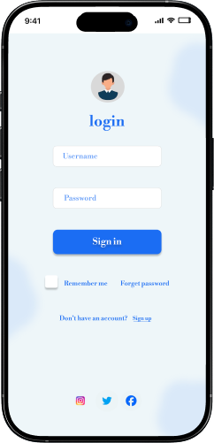
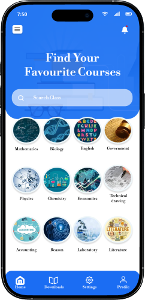
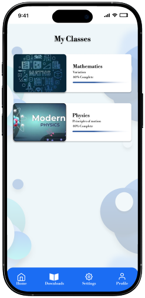
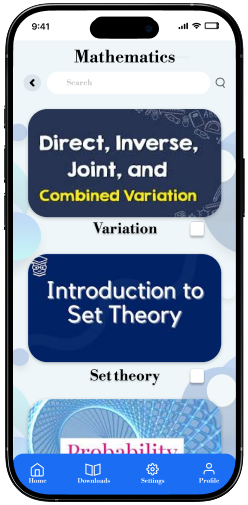
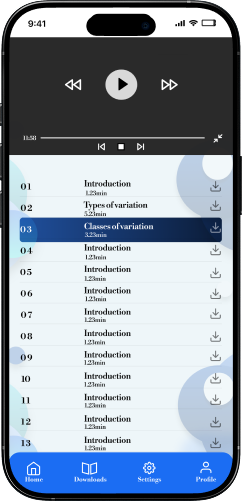

← Back to Portfolio
sky Lecture re-design for better user experience
OVERVIEW
Sky lecture is a mobile app, created to help students improve more in academics, giving them quick access to live classes, recorded lectures and study resources. The redesign aimed to remove unnecessary friction, improve navigations, and create a smoother learning experience for students managing tight schedules.
Project Info
Role : UI/UX Designer | Timeline : 6 weeks | Tools : Figma
PROBLEM
The user interface feels stiff and the overall experience isn't smooth
The app’s outdated visuals and abrupt animations made the experience feel rigid and uninviting. This reduced usability and created friction for students trying to learn efficiently.
THE SOLUTION
I redesigned the interface with a focus on modern aesthetics, smoother interactions and intuitive navigations.

old UI
➝

new UI
- I redesigned the interface with a modern, clean visual style
- Applied consistent typography and fresh color system
- Introduced smooth, natural animations
- Simplified navigation for easier usability
USER INTERVIEW
I conducted interviews with 10 students who were struggling with the app. I asked them the following questions to uncover their challenges and frustrations, and then organized the data into insights.
RESEARCH QUESTIONS
- Tell me about your experience when using the app
- What were the challenges you faced while using the app
- What motivated you to choose sky lectures
- What would you want appear different on the app
TESTING AND IMPROVMENTS
Improvments in My Design
Based on various feedbacks from interviewers, i iterated my design over a period of 6 weeks. These were the major improvements i implemented .


THE FINAL SCREENS
The final product






CONCLUSION + LESSON LEARNED
What I'd do differently next time
-
Iterate more often
At the start, I held on to some design ideas for too long before testing them. Next time, I’d create more quick variations and test them earlier with users. This would help me spot issues faster and improve the design without wasting time on concepts that don’t work.
-
Be clearer about choices
When making design decisions, I noticed that I sometimes focused more on the final result without explaining why I chose it. Next time, I’d make sure to show the options I considered and why one worked better than the others. This would make my design process easier to understand and also show the reasoning behind my work.
-
Put user insights first
During this project, I realized how much the feedback from students shaped the improvement of my design, so Instead of spending too much time documenting every step of my process, I would highlight the key insights I gained from users and show how those insights influenced my design decisions.
-
Mistakes are part of the process
While working on this redesign, I encountered several UI flaws and also uncovered deeper UX challenges within Sky Lectures. Instead of treating them as failures, I began to see them as valuable steps toward better solutions. Each mistake taught me something new and ultimately helped me refine the app into a smoother, more engaging experience.